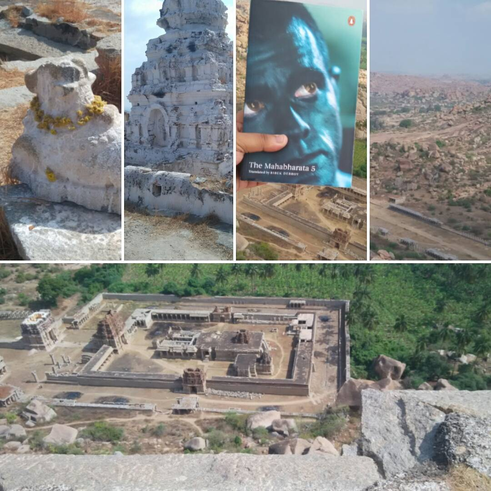
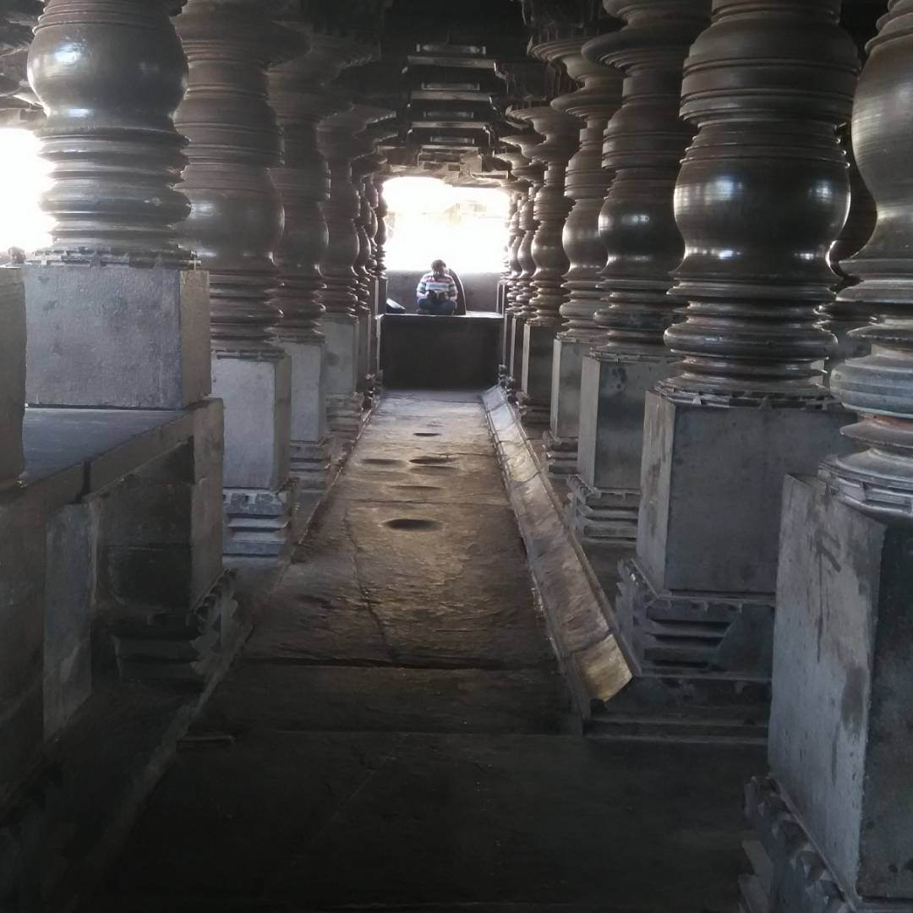
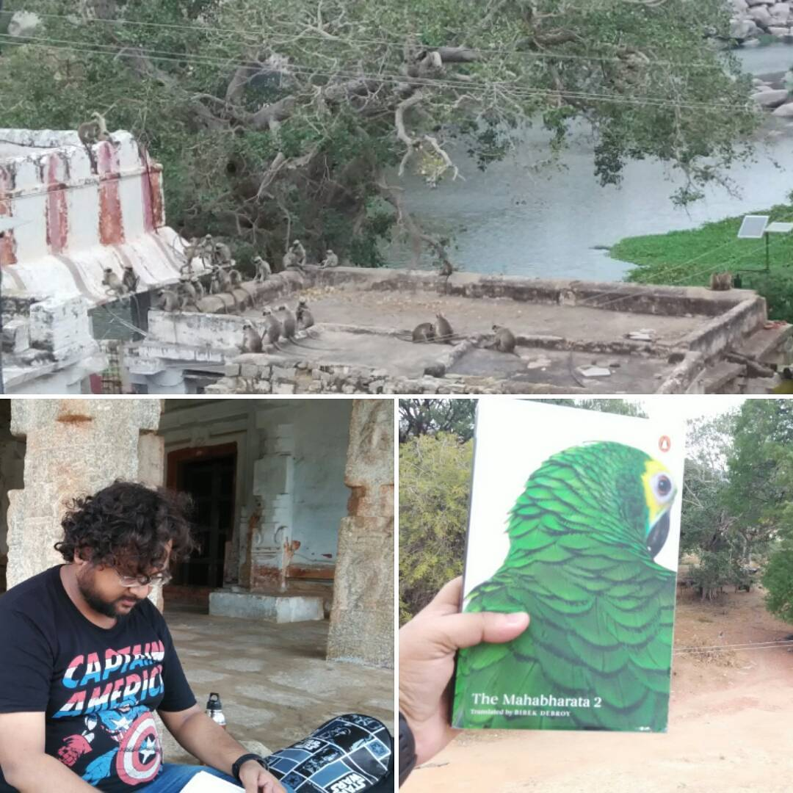
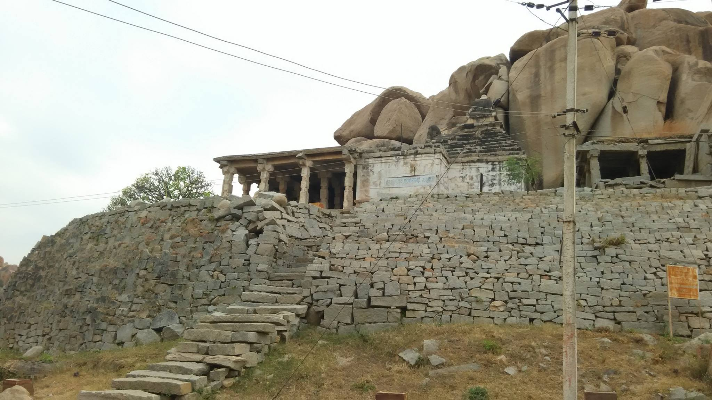

Posts tagged indian-mythology
Dear Mr. Debroy
- Mar 22, 2017
- Writing
The following is the content of handwritten letter I sent to Mr. Debroy dated Feb 12th, 2017. I’ve reproduced it in its entirety here.

Reading the Mahabharata by the Tungabhadra - Day 20
This journey has been relieving. I have done all that I set out to do. I came for a larger purpose, to start writing once again. It has been too long, and I have been scared of something.


Reading the Mahabharata by the Tungabhadra - Day 18
In the aftermath of the battle and after all the funerals, Krishna instructs Dharmaraja to go and seek Bhishma’s teachings. On his deathbed, Gangeya recites the hundred names of Vishnu, and begins revealing the nature of Dharma.
Reading the Mahabharata by the Tungabhadra - Day 17
The empty temples scare me. They stand here, stripped of their purpose by the invaders from Golkonda, Bijapur and Delhi. The idols are destroyed, nothing remains except the stories. Some temples don’t even have the stories. Guides make stuff up, they tell unsuspecting travellers that there’s some story here. There is, but it isn’t the story the guides are feeding them.

Reading the Mahabharata by the Tungabhadra - Day 15
My skin feels good against cold stone. I love the feeling in my toes as the cold air and the heat of the sun combine to give me shivers.
Reading the Mahabharata by the Tungabhadra - Day 14
My very first introduction to the Mahabharata was one of two comics, from Amar Chitra Katha, bought at the railway station in Mumbai, over twenty years ago.


Reading the Mahabharata by the Tungabhadra - Day 10
I am not reading these books at my usual speed. I could take the shorter way, read at full speed from the comforts of my home, or I could do it this way.
Reading the Mahabharata by the Tungabhadra - Day 9
This rock that I sit on is a picnic spot, and it suits the purpose really. Many locals come here, and their kids are curious about what I’m doing here.

Reading the Mahabharata by the Tungabhadra - Day 8
There is some justice in reading Markandeya’s rendition of the Ramayana, recited to the Pandavas, as I sit in Hampi. A large part of the Kishkinda Kanda is supposed to have occurred here, and I remember the stories that my grandfather told me about how Hanuman was born on Anjanadri Hill.
Reading the Mahabharata by the Tungabhadra - Day 7
As I read the Mahabharata today, a British lady came up to me to ask me about Hampi. She was wondering if the heat had something to do with global warming. I assured her that it has always been this hot here. It’s why Krishnadevaraya built so many pushkarinis, and why the landscape is filled with mantapas for weary travellers to rest as they walked in the hot sun.
Reading the Mahabharata by the Tungabhadra - Day 6
Wherever I sit down in Hampi, I can’t help but ask myself if once, a long time ago, Krishnadevaraya walked past this very spot. I wonder if I have walked along paths he liked to walk through, I wonder if he could appreciate the poetry of sitting under a tree to read the Mahabharata.

Reading the Mahabharata by the Tungabhadra - Day 5
I do not believe in religion, I despise the organized rituals that exist today. That is not Sanathana Dharma. Dharma is subtle, it is imbued into the blood of people such as Prahalada and Bali. It runs through the veins of Markandeya, and it is in the pillars of the sabha Maya built for Dharmaraja.
Reading the Mahabharata by the Tungabhadra - Day 4
How we ruin ourselves. Mankind has always fallen flat on its face when faced with the questions of Dharma.
Reading the Mahabharata by the Tungabhadra - Day 3
This land belongs to the monkeys. It is theirs to frolic in, it is theirs to own. We have somehow faltered here, and they know it far better than we.
Reading the Mahabharata by the Tungabhadra - Day 2
It is unbelievably calm atop a hill. I was right when I chose this spot to read the Mahabharata. Reading of Shakuntala and Dushyantha, I lost myself in her pain as he denied loving her. Reading about Yayati and how he beseeched his sons to share with him their youth, I could agree with him that one thousand years could never be enough time to enjoy the wonders of this world.
Reading the Mahabharata by the Tungabhadra - Day 1
Hampi. As a kid, I didn’t like going to Hampi. I had nothing to see there, it was full of tanks and wells. I didn’t care much for the heat either.
